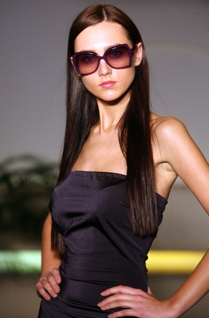

Užsidėti ar nusiimti rožinius akinius? | PrieKavos.lt
 Užsidėti ar nusiimti rožinius akinius? | PrieKavos.lt
Užsidėti ar nusiimti rožinius akinius? | PrieKavos.lt
Žurnalai
Home Sveikata ir grožis Stilius Grožis Sveikata Kūnui ir sielai Natūralioji medicina Natūrali medicina Žurnalas Be vaistų Vaistinėlė Kitu kampu Ekologija Būrėja Būrėja Žurnalas Psichologijos magija Žurnalas Kitas žvilgsnis Paslapčių skrynia Praktinė magija Tarp realybės ir fantazijos Skanaus Sveika ir skanu Salotos Užkandžiai Sriubos Karšti patiekalai Magiški patiekalai Desertai Gėrimai Viskas apie TV naujienos Įdomu Istorijos Įdomybės Kelionės Legendos Pažintys Patarimai Mano patarimai Žurnalas Gyvūnai Psichologija Rankdarbiai Vaikai S Patarimai > Gyvūnai | Mano patarimai | Psichologija | Rankdarbiai | VaikaiUžsidėti ar nusiimti rožinius akinius?
2015-09-17 16:10XXI amžiuje 24 valandas per parą žmonės bombarduojami pranešimais apie skandalus, nelaimes ir kriminalus. Nuolatinė įtampa, niekuo nepasitikėjimas, cinizmas ir ironija tampa nuolatiniais gyvenimo palydovais. Tačiau galų gale visa tai vargina. Norisi užmerkti akis arba užsidėti rožinius akinius ir įžiūrėti pasaulio grožį bei žmonių, skleidžiamą gėrį. Nors daugelis sako, kad rožinius akinius užsideda tik naivūs asmenys, tačiau galbūt bent retkarčiais juos reikėtų išsitraukti iš stalčių ir nupūsti dulkes ir visiems kitiems. Juk tada pasaulis atrodys gražesnis, o egzistencija žmonių planetoje ne tokia varginanti.
Prisiminti tai, kas gera ir pamiršti tai, kas buvo bloga, galima sakyti, tai yra laimės pagrindas. Bent jau taip teigia mokslininkai. Amerikiečių tyrėjai nustatė, kad žmonės, kurie dažnai jaučia nostalgiją dėl praeities yra labiau patenkinti savo gyvenimu negu tie, kurie yra linkę nuolatos prisiminti arba išpūsti savo nesėkmes.
Pastebėta, kad geriausiai sekasi taip mąstyti ekstravertams, o blogiausiai – asmenims, turintiems polinkį į neurozes. Moksliniame žurnale „Asmenybė ir individualūs skirtumai“ (angl. „Personality and Individual Differences“ ), kad požiūris turi stipresnį poveikį laimės jausmui negu patirtis ir sėkmė. Jeigu žmonės šiek tiek pakeistų tam tikras savo savybes, bet ne asmenybę iš esmės, jie jaustų didesnę laimę.
Nėra tiksliai žinoma, kada atsirado posakis apie žiūrėjimą pro rožinius akinius. Manoma, kad jis siekia XVIII amžių, kada klestėjo romantizmas. Romantikai pasaulį suprato kaip vietą, kurią reikia ištirti ir jie stengėsi neprarasti ryšio su gamta. Jie tikėjo, kad gyvenimas gali būti nuostabus, jeigu pavyks atsiriboti nuo materialių dalykų. Romantikai mėgo gamtą, todėl dažnai soduose augindavo rožių. Žmonės pradėjo sieti rožes ir jų spalvą su optimistiškais ir linksmais romantikais!
Kita teorija apie tai iš kur kilo posakis „Žiūrėti pro rožinius akinius“ siekia ankstesnius hipių laikus. Gėlių vaikai turi išskirtinę gyvenimo filosofiją, tiki visuotine taika ir laime. Vienas iš svarbiausių hipių mados atributų – rožiniai akiniai. Manoma, kad posakis atsirado dėl hipių lengvabūdiško ir linksmo požiūrio į gyvenimą ir ekstravagantiškų akinių nuo saulės.
Kad ir kuri teorija būtų teisinga, abejonių nekyla tik dėl vieno: šiame pasaulyje optimizmo tikrai niekada nebus per daug!
Kai žmonės užsideda rožinius akinius, pasaulis pasikeičia ir atsiveria naujos, nuostabios galimybės:
Žmonės nori, kad visiems būtų gerai, nesistengia tik dėl savo pačių gerovės. Darbuotojai siekia sukurti pridėtinę vertę, o ne tiesiog stengiasi imituoti darbo procesą ir sudaryti gerą įvaizdį, kad būti paaukštinti. Sunkumai – tai galimybė išspręsti problemas, o ne kliūtys sėkmei. Nėra tokių dalykų, kurie būtų per geri, kad būtų tiesa. Santykiai suprantami kaip ilgalaikė investicija, o ne nuolatiniai nuostoliai. Tokie žmonės net po nepavykusių santykių geba kažko naujo išmokti. Žmonės nebijo reikšti savo nuomonės dėlto, kad bus nesuprasti ar sugėdinti. Nepyksta dėl praeities. Įrodyta, kad žmonės, kurie į praeitį žiūri pro rožinius akinius, yra sveikesni. Pro rožinius akinius žvelgiantys žmonės yra nesavanaudiški ir altruistiški. Jie rūpinasi ne tik savimi, bet ir kitais. Jie turi lankstesnį požiūrį, yra atviresni diskusijoms ir konstruktyviai kritikai, sutinka ieškoti kompromisų.
Jūsų komentaras (Komentarų nėra)
Prisijungti:
Connect with:Komentavimas negalimas.
Susiję straipsniai
10 klausimų, prieš pradedant gyventi kartu
Kol kartu negyvenate, negalite sakyti, kad tikrai pažįstate vienas kitą? JAV atliktas tyrimas parodė, kad 48 % moterų apsigyvena su savo išrinktaisiais dar prieš vestuves. Tačiau tik 40 % iš jų iš tikrųjų susituokia. Tikriausiai nereikia kalbėti apie tai, kad gyvenimas kartu ir vaikščiojimas į pasim...
Plačiau6 patarimai, kaip tapti tolerantiškesniu sau ir kitiems
Ko gero, svarbiausia savybė, norint gerai sutarti su kitais žmonėmis yra tolerancija. Tolerantiški žmonės nesureikšmina kitų skirtumų. Tolerancija padeda pažiūrėti į įvairius dalykus iš naujos perspektyvos ir praplėsti savo akiratį! 6 patarimai, kaip tapti tolerantiškesniu sau i...
PlačiauNatūralioji medicina
Putino uogos gali padėti nuo šimto ligų (+ receptas)
Kaip natūraliomis priemonėmis užkirsti kelią peršalimui?
Sveikatos problemos – ženklas iš aukščiau?
HOROSKOPAS
Sėkmingas laikas, jūsų nuotaika puiki, atsiras galimybių ištaisyti seną klaidą, susitaikyti su draugu ar mylimu žmogumi. Palanki proga nuoširdžiau pasikalbėti su vaikais, kurie jau paaugliai ar suaugę.
Nepriekabiaukite, nepykite, nepradėkite aiškintis santykių, kol dešimt kartų nepatikrinsite, ar esate teisūs. Būkite nuoširdesni su antrąja puse: jūsų santykiai gali vėl tapti puikūs, jei bent truputį pasistengsite ką nors nuveikti jos labui.
Ieškokite kompromiso, derėkitės, mokėkite laiku nusileisti, pasiūlyti ar sutikti. Orientuokitės į kitų interesus (svarbiausia – partnerių), jei norite, kad ši diena būti vaisinga ir smagi.
Susimąstymų diena. Ramybės (ar geros nuotaikos) vis dar stigs, tad mažiau galvokite apie tai, ko nenorite, kas nepatinka ar netinka, ko reikia atsisakyti, verčiau pasvajokite apie tai, ko jums išties reikia. Darykite tik tai, kas jums malonu ir nesunku.
Šiandien daug nenorėkite, būkite kuklesni ir rimtai pamąstykite, ko reikia jūsų artimiesiems, ko jie iš jūsų norėtų. Tai geras laikas užsiimti atidėtais, nebaigtais darbais ir netinkamas pradėti ką nors nauja.
Darbų krūvis nemenkas, bet jūs puikiai jį įveiksite. Tinka su vadovybe aptarti jūsų veiklos perspektyvas: šiandien suvoksite, kas jums svarbiausia. Gautais pasiūlymais galite tikėti.
Tai tinkamas metas imtis darbų, kuriems reikia įkvėpimo, kūrybingumo ir optimizmo. Dabar švytėsite ir sulauksite aplinkinių pagarbos, simpatijos ir palaikymo. Galite sulaukti įdomaus pasiūlymo, bet neskubėkite jo priimti.
Sąlyginai pasyvus metas, nieko naujo ir rimto nesiimkite. Tiesa, jums seksis: atsiras norinčių ir galinčių padėti. Stebėkite, kas vyksta, ir stenkitės kuo optimistiškiau tai vertinti. Skirkite šią dieną apmąstymams vienatvėje.
Gana sėkminga diena, jei tik reikalus tvarkysite vieni. Dabar esate energingi, sumanūs, veiklūs, aplinkiniams paliekate malonų įspūdį ir nejučiomis turite įtakos jų nuomonei, pasirinkimui. Šiuo metu nuo jūsų nemažai kas priklauso, tad bus taip, kaip norėsite.
Galima netikėta pagalba, nelaukta dovana: darbe būsite vertinami, jums pakaks dėmesio iš draugų, mylimo asmens. Ir jums pakaks sveiko proto, kad įvertintumėte ne tik savo asmeninius nuopelnus, bet ir tą gera, kurį gavote iš savo antrosios pusės, draugų, giminaičių, kolegų.
Mėginkite susitikti su žmonėmis, kurių ilgą laiką nepavyko pagauti, draugiškai pasikalbėkite, tiesiai, be užuolankų užduokite klausimus, dėl kurių jie mėgina išsisukti. Tik patys venkite daug žadėti, griežtai įsipareigoti.
Tinka tvarkyti namų, šeimos reikalus, tai bus sėkmingiau, nei užsiimti atsakingų profesinių problemų sprendimu. Neskubinkite įvykių, tai tam tikrų apribojimų laikas, kai geriau atsitraukti nuo intensyvių darbų, daugiau laiko praleisti namuose.
Visų ženklų horoskopaiMagija ir burtai
Kas yra bloga akis? Simbolio reikšmė ir prasmė istorijoje
Pentagrama – užkoduota jėga
Įdomu
Vilniuje netrukus prasidės XXIII Tarptautinis akordeono festivalis
Įdomybės apie žmogaus anatomiją
TV naujienos
Ekstremalaus vandens sporto vicečempionas Edgaras Riabko po katastrofa vos nesibaigusios avarijos: pagalvojau, kaip šeima gyvens be manęs Iš kriminalinio herojaus miela Panda tapęs aktorius Josif Baliukevič prisipažino: slėpti tokią paslaptį buvo išties sunku Netradicinės seksualinės orientacijos vargonininkę iš bažnyčios išvaręs klebonas: „Komunija – ne batonas” kunigas homoseksualiems žmonėms negailėjo sparnuotų posakių Monisha – apie košmarą vaikystėje: „Patėvis su medžiokliniu šautuvu sustatė mus į eilę ir liepė rinktis, kuris pirmas“ Sauliaus Skambino mylimoji Živilė: „Kalbos, kad Sauliaus santuoka iširo dėl manęs, labai žeidžia“ LNK „Kaukėse” atidengtas aktorius Josif Baliukevič: „Visada verta peržengti per save” N. Pareigytė-Rukaitienė šokiruota: net neįsivaizdavau, kad mano draugė K. Krysko taip moka slapukauti J. Zinkevičiūtė išbandė modernią estetinę procedūrą: „Sulaukus trisdešimties, imi labiau mylėti savo kūną“ Aktoriaus Juliaus Žalakevičiaus namuose – penki šunys Su II tipo cukriniu diabetu gyvenantis A. Ivanauskas-Fara atskleidė, kaip atrodo jo mityba: „Reikėjo mokytis gyventi iš naujo“ Sėkmingą startuolį įkūrusi lietuvė: didžiausia pradinė investicija yra laikas 120 parduotuvių valdžiusi milijonierė Ugnė Usevičiūtė į filmavimą LNK laidoje iš Radviliškio ėjo penkias dienas „Bučiuoju. Rūta” skaudi išdavystės istorija: į komandiruotę Paryžiuje išlydėjusi vyrą, žmona jį atrado gretimame kaime meilužės glėby Verslininkas Ž. Grigaitis: „Aš nebūčiau vedęs tos moters “ Šokėjas Andrius Kandelis: „Jeigu būčiau kaltas, tikrai skaudėtų širdį “Mano PrieKavos.lt
PrisijungtiŽurnalų Prenumerata
Prenumeruok internetu Visi žurnalai Apie mus | Reklama | Mūsų žurnalai | Žurnalų prenumerata | KontaktaiUAB „SS Leidyba“
Pilies g. 4-114, Kaunas LT-44275
Tel.: +370 64652335
El-pastas: redakcija@priekavos.lt
© 2020 Visos teises saugomos. PRIEKAVOS.LT